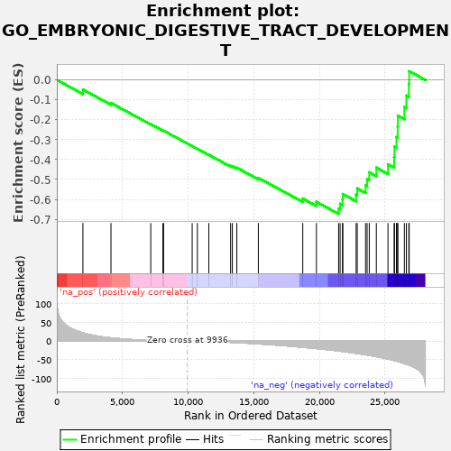

| | | Dataset | PRAD |
| Phenotype | NoPhenotypeAvailable |
| Upregulated in class | na_neg |
| GeneSet | GO_EMBRYONIC_DIGESTIVE_TRACT_DEVELOPMENT |
| Enrichment Score (ES) | -0.6725567 |
| Normalized Enrichment Score (NES) | -1.6619396 |
| Nominal p-value | 0.0 |
| FDR q-value | 0.010559378 |
| FWER p-Value | 0.617 |
Table: GSEA Results Summary

Fig 1: Enrichment plot: GO_EMBRYONIC_DIGESTIVE_TRACT_DEVELOPMENT
Profile of the Running ES Score & Positions of GeneSet Members on the Rank Ordered List
| PROBE | GENE SYMBOL | GENE_TITLE | RANK IN GENE LIST | RANK METRIC SCORE | RUNNING ES | CORE ENRICHMENT | | 1 | OVOL2 | | | 1987 | 21.924 | -0.0485 | No |
| 2 | IHH | | | 4125 | 8.714 | -0.1158 | No |
| 3 | SOX11 | | | 7157 | 1.799 | -0.2220 | No |
| 4 | HNF1B | | | 8081 | 0.900 | -0.2540 | No |
| 5 | SHOX2 | | | 8132 | 0.857 | -0.2549 | No |
| 6 | TNF | | | 10310 | -0.134 | -0.3324 | No |
| 7 | SHH | | | 10708 | -0.380 | -0.3462 | No |
| 8 | CXCL8 | | | 11581 | -1.133 | -0.3761 | No |
| 9 | TCF7 | | | 13238 | -3.256 | -0.4318 | No |
| 10 | HLX | | | 13373 | -3.495 | -0.4331 | No |
| 11 | SCT | | | 13714 | -4.021 | -0.4411 | No |
| 12 | TGFB2 | | | 15352 | -7.365 | -0.4919 | No |
| 13 | ID2 | | | 18737 | -16.535 | -0.5957 | No |
| 14 | STRA6 | | | 19778 | -19.979 | -0.6124 | No |
| 15 | NIPBL | | | 21466 | -26.345 | -0.6457 | Yes |
| 16 | FOXF2 | | | 21581 | -26.854 | -0.6223 | Yes |
| 17 | FGF9 | | | 21766 | -27.642 | -0.6006 | Yes |
| 18 | SALL1 | | | 21789 | -27.747 | -0.5731 | Yes |
| 19 | PKDCC | | | 22801 | -32.652 | -0.5758 | Yes |
| 20 | SIX2 | | | 22886 | -33.088 | -0.5450 | Yes |
| 21 | FGFR2 | | | 23522 | -36.355 | -0.5305 | Yes |
| 22 | TCF21 | | | 23639 | -36.932 | -0.4969 | Yes |
| 23 | RARB | | | 23802 | -37.921 | -0.4640 | Yes |
| 24 | VPS52 | | | 24341 | -41.446 | -0.4408 | Yes |
| 25 | PDGFRA | | | 25228 | -47.777 | -0.4236 | Yes |
| 26 | RARRES2 | | | 25699 | -51.620 | -0.3877 | Yes |
| 27 | ALDH1A2 | | | 25723 | -51.818 | -0.3356 | Yes |
| 28 | PCSK5 | | | 25873 | -53.288 | -0.2865 | Yes |
| 29 | RBPMS2 | | | 25966 | -54.120 | -0.2345 | Yes |
| 30 | GLI3 | | | 25979 | -54.235 | -0.1795 | Yes |
| 31 | FGF10 | | | 26478 | -59.830 | -0.1362 | Yes |
| 32 | FOXF1 | | | 26631 | -61.447 | -0.0789 | Yes |
| 33 | ADA | | | 26818 | -63.585 | -0.0205 | Yes |
| 34 | GLI2 | | | 26844 | -64.013 | 0.0439 | Yes |
Table: GSEA details [plain text format]
Fig 2: GO_EMBRYONIC_DIGESTIVE_TRACT_DEVELOPMENT: Random ES distribution
Gene set null distribution of ES for GO_EMBRYONIC_DIGESTIVE_TRACT_DEVELOPMENT